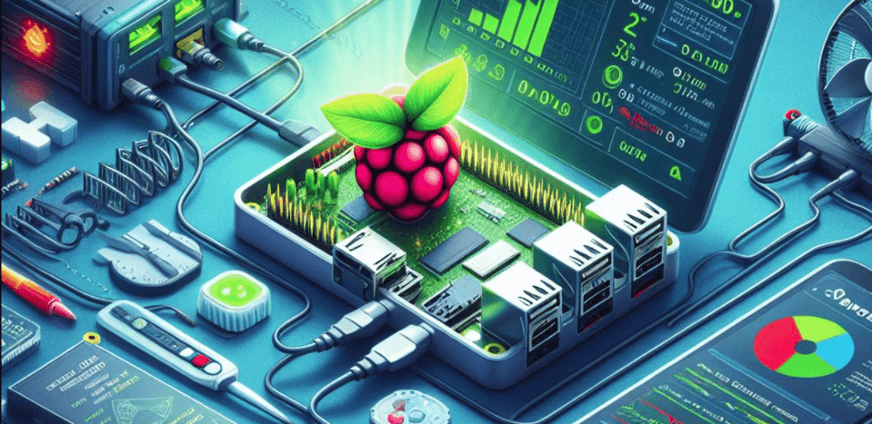

 Raspberry Pi MQTT Monitor
Raspberry Pi MQTT Monitor
The easiest way to monitor your Raspberry Pi or Linux system health in Home Assistant — up and running in minutes with zero manual HA configuration.
Features
- Zero-config Home Assistant setup — MQTT discovery messages create devices and sensors automatically
- Remote control — restart, shutdown, and update your device from Home Assistant
- Custom scripts — run your own scripts/programs on the host from Home Assistant buttons
- Flexible delivery — publish over MQTT or directly via the Home Assistant REST API
- Run as a service or cron job — auto-configured by the installer
- External sensor support — DS18B20 (temperature) and SHT21 (temperature + humidity)
- Sensor availability — sensors are marked unavailable in HA when readings fail
- Multi-language — English, German, French, and Bulgarian
- Easy updates — run
rpi-mqtt-monitor --updateor trigger from the Home Assistant UI
Explore the docs
What Gets Monitored
The full list of metrics and their config keys.
Installation
One-line automated install, service or cron setup.
CLI Reference
Every command-line flag explained.
Configuration
All config.py settings and display backends.
Home Assistant
Discovery, REST API, Wake-on-LAN and dashboards.
External Sensors
Wire up DS18B20 and SHT21 sensors.